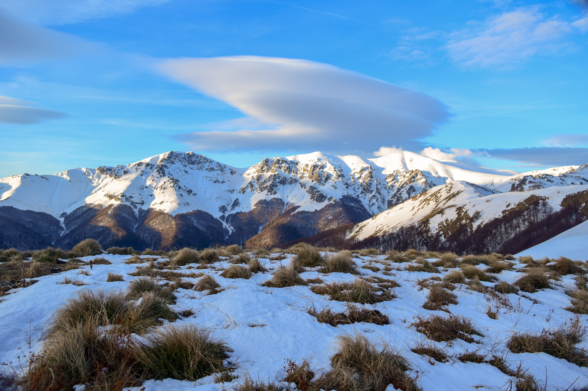

Стара планина
Стара планина се простира по цялата дължина на България и разделя страната на Северна и Южна България. Най-високият ѝ връх е Ботев (2376 м). Нарича се още Балкан, откъдето произлиза и името на Балканския полуостров. Древното римско име на Стара планина е Хемус.
Стара планина е част от Стоте национални туристически обекта. Сред тях са обектите връх Ботев, връх Шипка, с. Осеновлаг - манастир "Седемте престола", населени места в близост, като Котел, Жеравна, Сливен, Казанлък, Габрово, Боженци, Дряново, Трявна, Карлово, Калофер, Клисура, Сопот, Троянски манастир и др. В планината има 20 временни (пресъхващи) и постоянни езера. Поради изградената материална база, чистия въздух и високопланинския си характер, Стара планина често е предпочитана цел за туризъм. Има десетки хижи, изградени в планината.
Стара планина се разделя на три дяла: западен, среден и източен.
Западна Стара планина се простира от Белоградчишкия проход на северозапад до Ботевградски(Арабаконашки) проход на югоизток. Има дължина 190 км. Най-висок връх е Миджур (2168 м)
Средна Стара планинасе намира между Ботевградски (Арабаконашки) проход и прохода Вратник. Има дължина 207 км. В този дял се намира и най-високият връх в планината е връх Ботев (2376 м). В него са разположени Етрополска планина, Златишко-Тетевенска, Троянска, Калоферска, Шипченска, Тревненска и Елено-Твърдишка планина. Релефът е силно разчленен.
Източна Стара планина е с най-малка надморска височина. Простира се между прохода Вратник и нос Емине (на Черно море) и има дължина 155 км. Най-висок връх е Българка (1181 м). Балканът потъва в морето при най-красивия плаж по нашето крайбрежие Иракли.
Балканът е гръбнакът на България. През 9 век хан Крум напада византийската войска на 26 юли 811 г. при Върбишкия проход в Източна Стара планина. Императорът е пленен и посечен в краката на кана, а от черепа му той заповядва да направят окована със сребро чаша, от която пие наздравица. По този начин, според прабългарските вярвания, той си присвоява орендата (силата) на убития враг. Тази изключителна победа осигурява на България надмощие над Югоизточна Европа за много векове напред.
В Балкана се състои и друго велико сражение - битката при връх Шипка за освобождение на България от турско робство. Тогава Сюлейман паша прави последен неуспешен опит да превземе Шипченския проход и да открие пътя към обсадения Плевен.